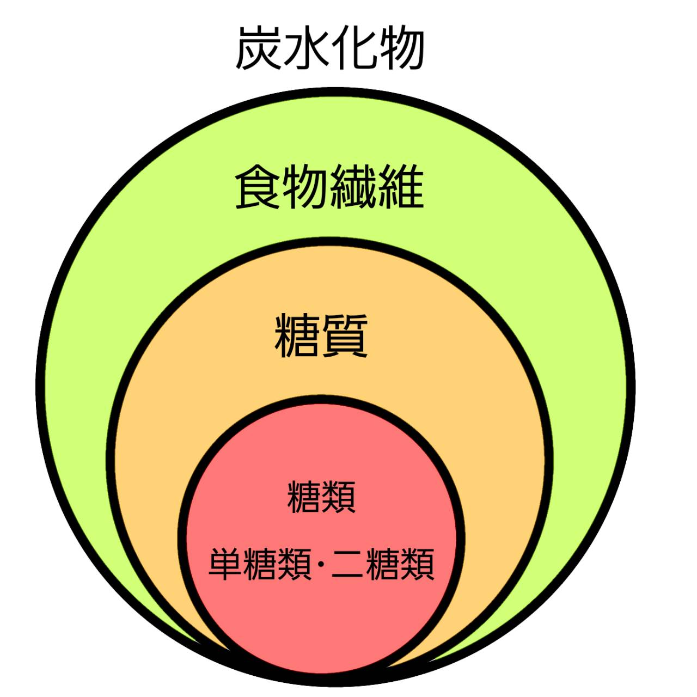

皆さん、「糖鎖」についてどのようなイメージを持っていますか？
Aさん.「初めて聞いた！」
Bさん.「一回習った気がするけど、なんなのか分からない...」
難しいイメージが思い浮かぶかもしれません。
そんな方でも大丈夫！！！
一つずつ見ていきましょう！！！
第1章 糖について
まずは、「糖」について説明します。
みなさん砂糖は好きですか？甘いスイーツには必ず入っていますよね！そんな砂糖は炭水化物に分類されています。炭水化物の中でも「糖質」の中の「糖類」に分類され、「二糖類」の仲間です。
急いで話しすぎましたね...一つずつ確認していきましょう！
糖質とは、「炭水化物の中から食物繊維を除いたもの」になります。そして糖類とは、「糖質から多糖類・糖アルコールなどを除いたもの」になります。糖と名前についていても、さまざまな種類があることがわかりますね！
ちなみに、糖類は皆さんの知っている甘い食べ物（果物、ハチミツ、甘酒など）が,
多糖類にはお米などが該当します。
糖質＝砂糖ではないんですね〜

2章 糖鎖の仕組み
糖鎖とは、『単糖』が『グリコシド結合』で結合した鎖状の構造をしているもののことを指しています。（GlyTech,inc. 参照）
まずは、単糖とグリコシド結合についてみていきましょう！
・単糖とは